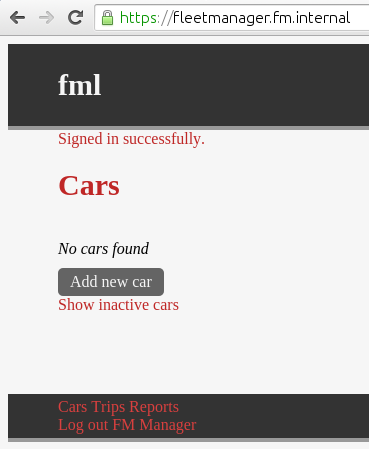

Fleet Manager (FM) is a web-based system for recording travel. You can use it to track mileage in multiple vehicles for multiple drivers.
Each driver should track their own travel. Fleet Manager uses your existing user directory to allow drivers to sign in to Fleet Manager with their own usernames and passwords.
Users can log travel as well as add and manage their own cars
Some users should be assigned the role of administrator, which allows them to add and modify any car.
Each vehicle has its profile stored. This includes information about the car, such as its make, model and registration. Each car must be assigned a unique name.
If a car belongs to the company, it is a fleet car.
Once a car is no longer being used, it should be marked as disabled. This won’t delete the car or any data, but will hide it from most views.
Each journey from one destination to another is referred to as a trip. This is recorded in Fleet Manager by entering the destination and the odometer reading of the car on arrival.
If a car is kept overnight at an employee’s residence, it is garaged there.
If a trip is not for business purposes, it is a personal trip. If your businesses charges employees for personal travel in company vehicles, you can use this to produce a list of charges.
The odometer reading and distance measurements do not include any units, and no calculations or conversions assume a particular unit of measurement. You should ensure that all data entered uses a consistent unit of measurement.
Fleet Manager is free software, released under the MIT License. It includes other free software such as Ruby on Rails, without all of which this project would not exist.
Fleet Manager is a Ruby on Rails application hosted with Phusion Passenger Standalone, which can be installed on many operating systems. The recommended way to install Fleet Manager is on a dedicated Debian or Ubuntu GNU/Linux computer.
You can install Fleet Manager using an installer or manually. The installer only supports some operating systems.
Fleet Manager stores all data in a SQLite3 database, db/production.sqlite3 under the app directory.
/srv/rails/fm
Fleet Manager requires a directory server to provide user authentication. This could be openLDAP, Microsoft Active Directory, Novell eDirectory or other LDAP-compatible directory. Fleet Manager must be able to communicate with the Directory server using LDAP.
It is recommended to create a directory user for Fleet Manager to use to bind to the directory.
The installer is a script which does the following:
To install Fleet Manager on Debian or Ubuntu:
Download and run the script. You will be prompted for your sudo password.
wget https://raw.githubusercontent.com/benformosa/fm/master/install/install.sh
chmod +x install.sh
./install.shConfigure the application. See Configuring Fleet Manager.
Edit config/ldap.yml under the app directory.
Set up the database. See Set up Database.
Run the script install/setupdb.sh under the app directory.
Start the application.
/etc/init.d/fm startTo install Fleet Manager on non-Debian based systems:
Create a user to install and run FM as. E.g. fm.
Set this user’s home directory to the app directory and add them to the sudoers group.
sudo useradd --user-group fm --home-dir /srv/rails/fm --shell /bin/bash --groups sudoCreate the app directory, and change its owner to fm.
sudo mkdir -p /srv/rails/fm
sudo chown fm:fm /srv/rails/fmInstall passenger and bundler using gem
sudo gem install passenger
sudo gem install bundlerBecome user fm.
sudo su -l fmfm, copy the FM source files into the app directory.As fm, install the software required by FM using bundler.
bundle installAs fm, pre-compile static files. This prepares images, css and js to be delivered by the web server.
RAILS_ENV=production bundle exec rake assets:precompileReturn to your normal user shell.
exitSet the secret_key_base in the file config/initializers/secret_token.rb under the app directory.
This is used for securely storing session information. See the Ruby on Rails Security Guide
echo "fm::Application.config.secret_key_base = \
\"$(cd /srv/rails/fm && bundle exec rake secret)\"" | \
sudo tee /srv/rails/fm/config/initializers/secret_token.rb > /dev/nullCopy the initscript and config file to /etc and set as executable.
sudo cp /srv/rails/fm/install/initd-fm /etc/init.d/fm
sudo chmod +x /etc/init.d/fm
sudo cp /srv/rails/fm/install/etc-fm.sh /etc/fm.sh
sudo chmod +x /etc/fm.shObtain or generate an SSL certificate. E.g.
openssl req -x509 -newkey rsa:2048 -days 365 -nodes \
-keyout /etc/ssl/private/self-signed.key -out /etc/ssl/certs/self-signed.pem
sudo chmod 600 /etc/ssl/certs/self-signed.pem
sudo chmod 600 /etc/ssl/private/self-signed.keyConfigure the application. See Configuring Fleet Manager.
Edit config/ldap.yml under the app directory.
Set up the database. See Set up Database.
sudo /srv/rails/fm/install/setupdb.sh`Start the application.
/etc/init.d/fm startConfiguration for the service is through the configuration file /etc/fm.sh. This is a shell script which only sets variables.
Configuration for the application itself is through configuration files in config, under the app directory.
It is essential to configure LDAP settings before setting up the database.
The file config/ldap.yml under the app directory defines FM’s connection to an LDAP server.
Set the following values in the authorizations section:
group_baserequired_groupsadmin_groupSet the following values in the production section:
hostportattributesamaccountname, for openLDAP; it’s usually cn.
basesslsimple_tls, start_tls, or false to disable LDAPS. See the Net:LDAP Rubydoc
config/ldap.yml
authorizations: &AUTHORIZATIONS
group_base: cn=users,dc=example,dc=com
required_groups:
- [“member”, “cn=app_users,cn=users,dc=example,dc=com”]
admin_group: cn=app_admins,cn=users,dc=example,dc=com
production
host: ldap.example.com
port: 389
attribute: samaccountname
base: cn=users,dc=example,dc=com
admin_user: cn=app_bind,cn=users,dc=example,dc=com
admin_password: secret
ssl: false
<<: *AUTHORIZATIONSRun the script install/setupdb.sh to initialise the database.
Ensure that LDAP settings are configured and the LDAP server is available before running the script.
Using HTTPS is recommended, but not required. If you installed FM with the installer, a self-signed SSL certificate was created for you, and FM will use this for HTTPS.
Restart the application after making any changes to the configuration file.
To use your own SSL certificate, edit the configuration file /etc/fm.sh and update the following lines with the path to your SSL certificate.
SSL_CERT=/etc/ssl/certs/self-signed.pem
SSL_KEY=/etc/ssl/private/self-signed.keyTo serve the application over HTTP instead of HTTPS, edit the configuration file /etc/fm.sh and change the value of SSL to false.
SSL=falseSet the port to 80.
PORT=80The Fleet Manager service can be controlled from the initscript /etc/init.d/fm.
To start the FM service:
sudo /etc/init.d/fm startYou will see a message like the following. Note that this contains useful info such as the address the web server is listening on and log file location.
Starting service…
=============== Phusion Passenger Standalone web server started ===============
PID file: /var/run/fm.pid
Log file: /var/log/fm.log
Environment: production
Accessible via: https://0.0.0.0:443/
Serving in the background as a daemon.
Problems? Check https://www.phusionpassenger.com/library/admin/standalone/troubleshooting/
===============================================================================
Service startedThe first time you start FM, Phusion Passenger will download and set up a web server module for your system. You will see a message like
--> Downloading a Phusion Passenger agent binary for your platform
--> Installing Nginx 1.8.0 engine
--------------------------
--> Compiling passenger_native_support.so for the current Ruby interpreter...
(set PASSENGER_COMPILE_NATIVE_SUPPORT_BINARY=0 to disable)
Compilation succesful. The logs are here:
/tmp/passenger_native_support-1e4sumo.log
--> passenger_native_support.so successfully loaded.To stop the FM service:
sudo /etc/init.d/fm stopStopping service…
Service stoppedTo restart FM:
sudo /etc/init.d/fm restartThis is the same as running the stop and start actions successively.
If FM is already stopped, this action is the same as start.
To determine if the FM service is running:
sudo /etc/init.d/fm statusIf it is running, its PID and PID file will be reported.
Phusion Passenger Standalone is running on PID 25279, according to PID file /var/run/fm.pidYou will see this message if it is not running.
Phusion Passenger Standalone is not running, according to PID file /var/run/fm.pidTo back up Fleet Manager’s data, stop the application, then copy the database file to a backup location.
sudo /etc/init.d/fm stop
sudo cp /srv/rails/fm/db/production.sqlite3 /path/to/backups/production_backup.sqlite3
sudo /etc/init.d/fm startTo restore from a backup, stop the application, then copy the backup to db/production.sqlite3 under the app directory.
sudo /etc/init.d/fm stop
sudo cp /path/to/backups/production_backup.sqlite3 /srv/rails/fm/db/production.sqlite3
sudo /etc/init.d/fm startIf you are restoring to a new installation, restore the database in place of performing the Set up database step.
If you need to retain your Car, Trip and user data, backup the database before uninstalling.
If you installed FM with the installer, you can use the uninstaller to remove it.
The uninstaller is a script which does the following:
To uninstall Fleet Manager:
Copy the script to your home directory and run it.
cp /srv/rails/fm/install/uninstall.sh .
chmod +x uninstall.sh
./uninstall.shRead the warning. Type 1 to continue with the uninstaller, or 2 to exit.
###########
# #
# WARNING #
# #
###########
This script will delete the following files and directories:
/etc/fm.sh
/etc/init.d/fm
/etc/ssl/certs/self-signed.key
/etc/ssl/certs/self-signed.pem
/srv/rails/fm
Are you sure you want to uninstall Fleet Manager?
1) Yes
2) No
#?Backup database (Size 24K) to /home/ben/fm-production-backup_1439893245.sqlite3 ?
Select Cancel to exit the uninstaller."
1) Yes
2) No
3) Cancel
#?If you installed FM manually or would prefer not to use the uninstaller, use this process to remove it.
Remove the user fm if it is no longer required by another application.
sudo userdel fmRemove the app directory
sudo rm -rf /srv/rails/fmUninstall passenger and bundler if they are no longer required by another application.
sudo gem uninstall bundler
sudo gem uninstall passengerRemove the initscript and config file.
sudo rm /etc/init.d/fm
sudo rm /etc/fm.shRemove the SSL certificate and key if they are no longer required by another application. E.g.
sudo rm /etc/ssl/certs/self-signed.pem
sudo rm /etc/ssl/private/self-signed.keyUninstall any prerequisite software which is no longer required. E.g.
sudo apt-get remove ruby-dev zlib1g-dev libsqlite3-dev openssl gitFleet Manager’s log is log/production.log under the app directory. This will show what the application is doing, such as receiving HTTP requests and making database queries. Passenger has a separate log file /var/log/fm.log. This will show what the Passenger service is doing, such as starting and stopping the application.
Symptoms: Web pages use browser default style, no images or styles are loaded.
If you attempt to sign out, you see a 404 error page.
You may see log messages such as:
I, [2015-08-17T18:33:44.049755 #29405] INFO -- : Started GET "/javascripts/application.js" for 192.168.1.26 at 2015-08-17 18:33:44 +1000
F, [2015-08-17T18:33:44.066944 #29405] FATAL -- :
ActionController::RoutingError (No route matches [GET] "/javascripts/application.js"):
I, [2015-08-17T18:34:15.734383 #29405] INFO -- : Started GET "/users/sign_out" for 192.168.1.26 at 2015-08-17 18:34:15 +1000
F, [2015-08-17T18:34:15.741476 #29405] FATAL -- :
ActionController::RoutingError (No route matches [GET] "/users/sign_out"):Resolution: The web server is not serving static files. Use rake to prepare the files to be deliverd to clients
RAILS_ENV=production bundle exec rake assets:precompileAt the bottom of each page are links to the main pages, Cars, Trips, and Reports.
Each page also has a sign out link.
To Sign in to Fleet Manager, you will need your directory account username and password. This account should be a member of the FM users group, see Configuring LDAP.
In a web browser, browse to Fleet Manager’s address. At the Sign In page, enter your username and password and click Sign in.
After signing in, you will be redirected to the Cars page.

To sign out of Fleet Manager, click the Sign out user name link at the bottom of any page. Your session will end and you will be redirected to the Sign In page.
At the Cars page, click Add new car.
Fill in the form with the details of the car and click Create Car.

If one of fields is blank or entered incorrectly, you will see a message such as the following.

Cars are listed on the Cars page with their name and an icon. If Fleet Manager has a logo image for a car’s Make, it will be displayed as the icon.
At the Cars page, click the name or image of a car to browse to its car details page. This page shows the car’s details.

To see disabled cars, click Show inactive cars on the Cars page to switch to the disabled cars view.
Click Show active cars to return to the standard view.
To change a car’s details, click Edit car from the car details page.
You can update details that were set when creating the car. Click Update Car to save changes.
When a car is no longer in use, disable it by editing it and clearing the Enable check box.
This will hide the car from the default view. There is no option to remove cars from the database.
To record a journey, click Log trip under the car’s name on the Cars page, or Log new trip for car name from it’s car details page or Trips page.
Enter the location and odometer reading as at the end of the trip and click Create Trip.

When entering a location, you can search previously used location by entering part of their name. a suggestion box will appear with matching locations. Click one of these suggestions to copy it to the location field.

If the trip ends at an [employee’s residence](#garaging-cars] and will stay there overnight, check the Garaged checkbox when completing the form.
If the trip is not for business purposes, check the Personal checkbox when completing the form.
The Trips page shows a table of all trips.
To view trips for a single car, click that car’s name in the Car column.

The Reports page shows a list of available reports. Click the name of a report to see it.
On the report page, click Download CSV for a copy of the report data in CSV format.